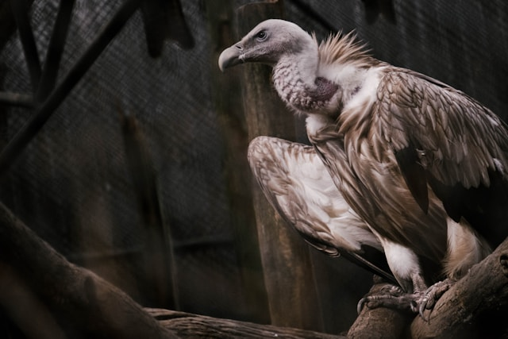
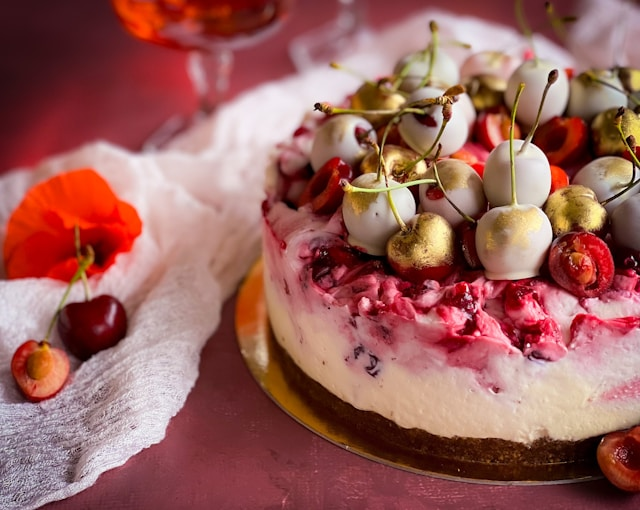
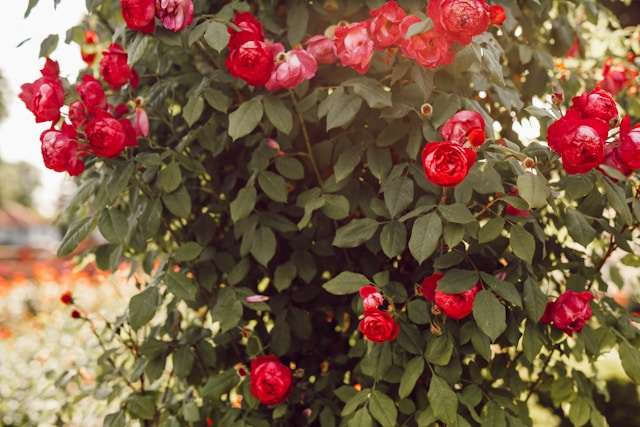

Falconry
Falconry is a hobby I want to get into either during college or after it. Falconry is considered a sport, but it is more of a lifestyle, since you are taking care of raptors just for the sake of it. It takes a lot of time and a lot of space to take care of them, and they have to be trained as well, which takes even more time and space. That isn't including the money or the energy it takes either, or the years of studying, or the two years minimum of apprenticeship. Of all the raptors I could have once I become a Master Falconer, the two that I want the most are a barn owl and an Egyptian vulture. Owls are not very smart, but they are very beautiful and fairly friendly once trained, and barn owls have always been my favorite. Vulture are very smart and also incredibly friendly, described as puppy-like, and I also love vultures, and I actually think they are quite beautiful too.

Baking
Baking is a beloved hobby throughout my entire family. Every woman in every generation learned from her mother how to bake, passing down the family recipes while also adding recipes to them. After I go to college for Cybersecurity, I want to go to the Culinary Institute of America in order to get a degree in Baking and Pastry Arts. I love my family's legacy of baking, but I don't have much experience or knowledge of baking. Also, I want to be able to add my own recipes to the existing collection, as well as just know more about baking, and the CIA has a great program.

Gardening
Gardening has also been passed down as a hobby, since many of the plants we grow are then used in a recipe. We have always grown rhubarb, raspberries, and roses, and turned the rhubarb and raspberries into the best pie anyone in my family has ever had. The raspberries have been grown from cuttings from the original plant and grown wherever the family has gone since. Unfortunately, no one has made a raspberry rhubarb pie since my great-grandmother passed away when I was little.
